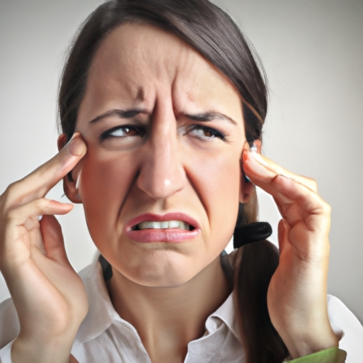
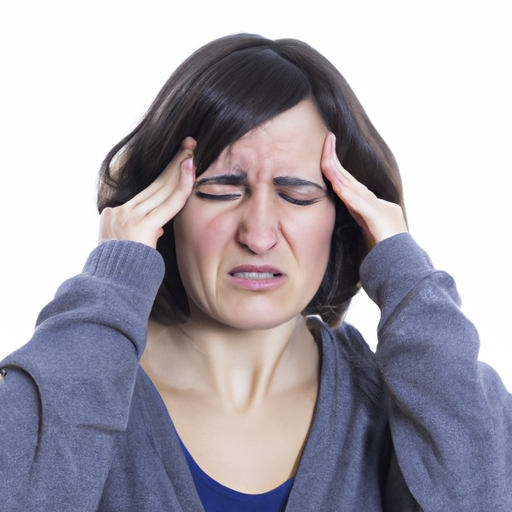

News
Services
Bruxism San Clemente, California
Teeth grinding San Clemente, California
Tension headaches San Clemente, California
Jaw clenching San Clemente, California
TMJ disorders San Clemente, California
About Us
Bruxism Teeth Grinding
What is Bruxism Teeth and How Can It Help Relieve Tension Headaches?
Sep 20, 2023
Bruxism Teeth is an innovative solution for those who suffer from tension headaches.. It works by placing a tiny device in your mouth that helps to relax your jaw muscles and reduce the amount of clenching or grinding you do while sleeping. (It's) surprisingly simple and can even be done at home!
What Is the Connection Between Bruxism Teeth and Managing Tension Headaches?
Sep 20, 2023
Bruxism teeth and managing tension headaches have a direct connection. (It) can be seen that when one suffers from tension headaches, they are more likely to suffer from bruxism or grinding of the teeth.. This is because when one is under stress, they tend to clench their jaw, which leads to teeth grinding.

How to Eliminate Bruxism Teeth and Tension Headaches - Fast!
Sep 20, 2023
Bruxism teeth and tension headaches can be a real pain, causing discomfort in both the body and mind!. To get rid of this burden fast, it's important to practice self-care strategies.

Unlock the Secret to Quickly Relieving Bruxism Teeth and Tension Headaches!
Sep 20, 2023
(Conclusion)
Bruxism teeth and tension headaches can be a real pain, but luckily there's a secret to quickly relieving them!. With the right lifestyle changes and treatments, you can easily reduce these symptoms.
Causes of Bruxism Teeth and Tension Headaches
Sep 20, 2023
Bruxism teeth and tension headaches can be caused by a variety of things, but the most common culprits are stress and anxiety.. It's no wonder why so many people struggle with these conditions – life can be incredibly overwhelming at times! (In fact,) one recent study even found that nearly 40% of adults in the United States suffer from some form of bruxism.
So, what can we do to reduce our risk of developing these ailments?
Treatment Options for Bruxism Teeth and Tension Headaches
Sep 20, 2023
The treatment options for bruxism teeth and tension headaches are varied and should be tailored to the individual. (In) some cases, dental appliances such as a splint or occlusal guard can help reduce grinding of the teeth while sleeping, as well as alleviate chronic tension headaches.. Additionally, botox injections may be employed to relax the muscles in the face and neck that are prone to spasms - which can cause pain.